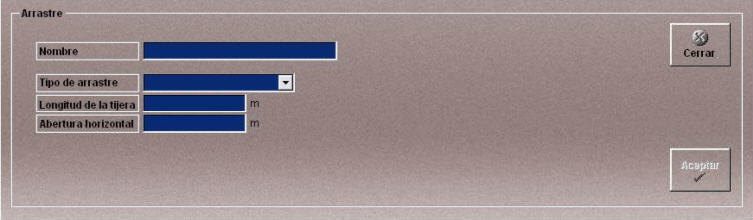

Arrastre
La creación y edición de artes de arrastre se realiza mediante la siguiente ventana.

Esta ventana permite definir el arte de pesca de arrastre que podrá ser añadido a las unidades participantes en los Ejercicios.
Se definen los siguientes datos:
Nombre: Nombre del arte.
Formato: caracteres alfanuméricos.
Tipo de Arrastre: Permite especificar distintos tipos de arrastre.
- Simple
- Por Parejas
- Tangón
Abertura Horizontal: Este dato sólo es válido para el arrastre con tangones sin puertas y define la longitud de la boca de la red.
Unidades: metros
Rango: 0.00- 300.00
Longitud de la Tijera: Este dato sólo es válido para el arrastre con tangones y define la longitud que se especifica en los esquemas que se muestran a continuación.
Unidades: metros
Rango: 0.00- 60.00
Longitud de la tijera en el arte de tangones con puertas

Longitud de la tijera en el arte de tangones sin puertas